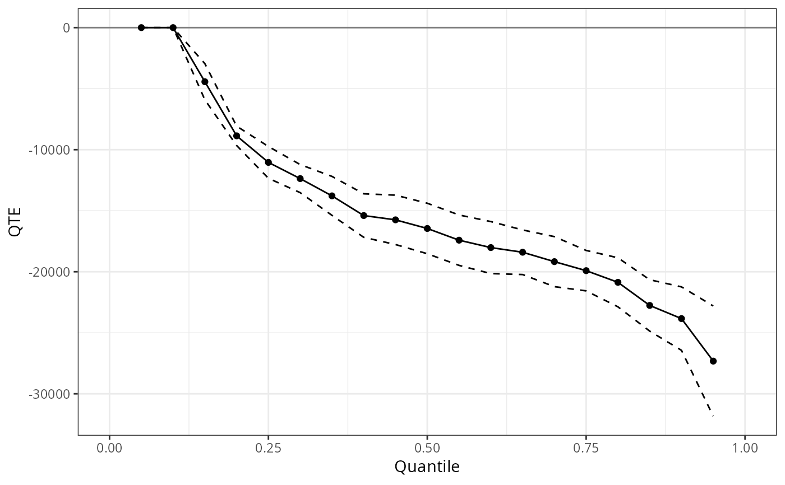

unc_qte
unc_qte.RdEstimates the Quantile Treatment Effect (QTE) or Quantile Treatment Effect on the Treated (QTT) under unconfoundedness, also known as selection on observables. The key identifying assumption is \((Y(0), Y(1)) \perp D \mid X\), i.e., potential outcomes are independent of treatment conditional on covariates \(X\).
Three estimation methods are available via est_method:
"ipw"Propensity-score reweighting (Firpo 2007). The propensity score \(p(X) = P(D=1|X)\) is estimated by logit or probit and used to reweight the sample so that the covariate distributions of the treated and untreated groups match. For the QTE, both groups are reweighted toward the population distribution; for the QTT, only the untreated group is reweighted toward the treated covariate distribution.
"or"Outcome regression via quantile regression inversion.
rqis fit on a dense internal grid of \(\tau\) values, yielding a conditional quantile function \(Q_{Y|X,D=j}(\tau)\) for each arm \(j\). The marginal distribution is recovered by averaging conditional quantile functions over the empirical covariate distribution (Melly 2006; Chernozhukov, Fernandez-Val, and Melly 2013)."aipw"Doubly-robust augmented IPW. Combines the propensity score model with the conditional quantile outcome model. The CDF estimator is consistent if either the propensity score or the outcome model is correctly specified (semiparametric efficiency when both are correct).
When xformla = ~1 (the default), all three methods reduce to
simple quantile differences between the treated and untreated groups, which
is consistent under unconditional unconfoundedness. Covariates are required
for covariate-adjusted estimation.
Standard errors and uniform confidence bands are computed via the
empirical bootstrap. Setting biters = 0 is planned for a future
version to skip inference and return point estimates only.
Arguments
- yname
character; name of the outcome variable in
data.- dname
character; name of the binary treatment indicator in
data(1 = treated, 0 = untreated).- data
data.frame containing the analysis data.
- xformla
one-sided formula for covariates used in the propensity score and/or outcome model, e.g.
~ age + I(age^2) + education. Default~1uses no covariates (simple quantile differences).- weightsname
character; name of a column in
datacontaining sampling weights. DefaultNULLapplies equal weights.- probs
numeric vector of quantile levels at which to evaluate the QTE or QTT. Default
seq(0.05, 0.95, 0.05).- alp
significance level for confidence intervals. Default 0.05.
- biters
number of bootstrap iterations for standard errors and confidence bands. Default 100.
- cband
logical; if
TRUE(default), report a uniform confidence band (simultaneous over all quantiles inprobs) in addition to pointwise intervals.- boot_type
bootstrap variant. Currently only
"empirical"is supported.- method
propensity score link function:
"logit"(default) or"probit". Used byest_method = "ipw"and"aipw".- est_method
estimation method; one of:
"ipw"(default) — inverse propensity weighting"or"— outcome regression via quantile regression inversion"aipw"— doubly-robust augmented IPW
- target
target parameter; one of:
"qte"(default) — population QTE: \(Q_{Y(1)}(\tau) - Q_{Y(0)}(\tau)\)"qtt"— QTT (effect on the treated): \(Q_{Y(1)|D=1}(\tau) - Q_{Y(0)|D=1}(\tau)\)
- cl
number of cores for parallel bootstrap. Default 1 (sequential).
Value
An object of class QTE containing:
qtenumeric vector of estimated QTE (or QTT) at each element of
probs.ateestimated ATE (or ATT when
target = "qtt").qte.sebootstrap standard errors for
qte.qte.lower,qte.upperconfidence interval bounds for
qte; uniform whencband = TRUE, pointwise otherwise.ate.se,ate.lower,ate.upperSE and CI for
ate.probsthe
probsvector passed by the user.pscore.regfitted propensity score
glmobject, orNULLwhenest_method = "or"orxformla = ~1.
Use summary() to print a formatted table and plot() to
display the QTE curve with confidence bands.
References
Firpo, Sergio. “Efficient Semiparametric Estimation of Quantile Treatment Effects.” Econometrica 75(1), pp. 259–276, 2007.
Melly, Blaise. “Estimation of Counterfactual Distributions Using Quantile Regression.” Working paper, University of St. Gallen, 2006.
Chernozhukov, Victor, Ivan Fernandez-Val, and Blaise Melly. “Inference on Counterfactual Distributions.” Econometrica 81(6), pp. 2205–2268, 2013.
Examples
data(lalonde)
## IPW, no covariates (simple quantile differences)
# \donttest{
q1 <- unc_qte(yname = "re78", dname = "treat", data = lalonde.psid,
biters = 20, probs = seq(0.05, 0.95, 0.05))
summary(q1)
#>
#> Overall ATE:
#> ATE Std. Error [ 95% Conf. Int.]
#> -15204.78 658.7371 -16495.88 -13913.67 *
#>
#>
#> QTE:
#> Tau QTE Std. Error [ 95% Simult. Conf. Band]
#> 0.05 0.000 0.0000 0.000 0.0001 *
#> 0.10 0.000 0.0000 0.000 0.0000
#> 0.15 -4433.180 755.5222 -5913.976 -2952.3833 *
#> 0.20 -8866.359 404.6120 -9659.384 -8073.3344 *
#> 0.25 -11041.037 664.4134 -12343.263 -9738.8102 *
#> 0.30 -12369.655 586.8586 -13519.877 -11219.4335 *
#> 0.35 -13783.867 813.5357 -15378.367 -12189.3659 *
#> 0.40 -15397.027 909.8757 -17180.351 -13613.7038 *
#> 0.45 -15747.885 1032.2459 -17771.050 -13724.7204 *
#> 0.50 -16455.862 1054.9852 -18523.595 -14388.1291 *
#> 0.55 -17414.162 1053.3812 -19478.751 -15349.5724 *
#> 0.60 -18020.487 1086.8987 -20150.769 -15890.2043 *
#> 0.65 -18402.105 932.1658 -20229.117 -16575.0939 *
#> 0.70 -19172.183 1045.4179 -21221.164 -17123.2013 *
#> 0.75 -19911.531 844.7875 -21567.285 -18255.7783 *
#> 0.80 -20865.535 1024.7453 -22873.999 -18857.0711 *
#> 0.85 -22759.664 1074.1332 -24864.927 -20654.4016 *
#> 0.90 -23838.991 1326.0996 -26438.098 -21239.8837 *
#> 0.95 -27321.670 2304.1312 -31837.684 -22805.6561 *
#> ---
#> Signif. codes: `*' confidence band does not cover 0
#>
plot(q1)

# }
## OR with covariates, QTE
# \donttest{
xf <- ~ age + I(age^2) + education + black + hispanic + married + nodegree
q2 <- unc_qte(yname = "re78", dname = "treat", data = lalonde.psid,
xformla = xf, est_method = "or",
biters = 20, probs = seq(0.05, 0.95, 0.05))
summary(q2)
#>
#> Overall ATE:
#> ATE Std. Error [ 95% Conf. Int.]
#> -11673 1237.144 -14097.76 -9248.246 *
#>
#>
#> QTE:
#> Tau QTE Std. Error [ 95% Simult. Conf. Band]
#> 0.05 0.0000 534.0282 -1046.676 1046.6760
#> 0.10 -629.4847 570.9274 -1748.482 489.5125
#> 0.15 -3339.6661 792.9824 -4893.883 -1785.4493 *
#> 0.20 -6271.0174 983.1231 -8197.903 -4344.1314 *
#> 0.25 -7389.0936 1099.2800 -9543.643 -5234.5444 *
#> 0.30 -8720.8441 1011.3089 -10702.973 -6738.7151 *
#> 0.35 -9806.8096 1047.2833 -11859.447 -7754.1721 *
#> 0.40 -10691.4275 1252.9665 -13147.197 -8235.6584 *
#> 0.45 -11766.7929 1420.9047 -14551.715 -8981.8707 *
#> 0.50 -12340.5998 1521.6435 -15322.966 -9358.2334 *
#> 0.55 -13234.5395 1617.5103 -16404.801 -10064.2776 *
#> 0.60 -14019.6732 1696.7175 -17345.178 -10694.1681 *
#> 0.65 -14218.2984 1743.5961 -17635.684 -10800.9128 *
#> 0.70 -14998.7512 1923.6990 -18769.132 -11228.3705 *
#> 0.75 -15976.4066 2147.3183 -20185.073 -11767.7400 *
#> 0.80 -16608.3944 2399.6631 -21311.648 -11905.1412 *
#> 0.85 -18163.3251 2537.9927 -23137.699 -13188.9508 *
#> 0.90 -19352.5860 3017.5456 -25266.867 -13438.3053 *
#> 0.95 -21652.2255 4315.4411 -30110.335 -13194.1164 *
#> ---
#> Signif. codes: `*' confidence band does not cover 0
#>
# }
## AIPW with covariates, QTT
# \donttest{
q3 <- unc_qte(yname = "re78", dname = "treat", data = lalonde.psid,
xformla = xf, est_method = "aipw", target = "qtt",
biters = 20, probs = seq(0.05, 0.95, 0.05))
#> Warning: collapsing to unique 'x' values
#> Warning: collapsing to unique 'x' values
#> Warning: collapsing to unique 'x' values
#> Warning: collapsing to unique 'x' values
#> Warning: collapsing to unique 'x' values
#> Warning: collapsing to unique 'x' values
#> Warning: collapsing to unique 'x' values
#> Warning: collapsing to unique 'x' values
#> Warning: collapsing to unique 'x' values
#> Warning: collapsing to unique 'x' values
#> Warning: collapsing to unique 'x' values
#> Warning: collapsing to unique 'x' values
#> Warning: collapsing to unique 'x' values
#> Warning: collapsing to unique 'x' values
#> Warning: collapsing to unique 'x' values
#> Warning: collapsing to unique 'x' values
#> Warning: collapsing to unique 'x' values
#> Warning: collapsing to unique 'x' values
#> Warning: collapsing to unique 'x' values
#> Warning: collapsing to unique 'x' values
#> Warning: collapsing to unique 'x' values
summary(q3)
#>
#> Overall ATT:
#> ATT Std. Error [ 95% Conf. Int.]
#> -4685.583 1011.927 -6668.923 -2702.243 *
#>
#>
#> QTT:
#> Tau QTT Std. Error [ 95% Simult. Conf. Band]
#> 0.05 0.0001 103.2261 -202.3194 202.3195
#> 0.10 0.0001 103.2261 -202.3194 202.3195
#> 0.15 0.0001 393.5429 -771.3299 771.3300
#> 0.20 -1002.7420 560.2172 -2100.7476 95.2636
#> 0.25 -1877.9927 1081.8291 -3998.3386 242.3533
#> 0.30 -3427.3187 1675.6185 -6711.4706 -143.1667 *
#> 0.35 -4425.7038 1708.3212 -7773.9519 -1077.4558 *
#> 0.40 -5022.1405 1335.9215 -7640.4986 -2403.7824 *
#> 0.45 -4721.0091 1279.2568 -7228.3063 -2213.7119 *
#> 0.50 -4611.6428 1105.5460 -6778.4731 -2444.8124 *
#> 0.55 -4639.0952 1145.4495 -6884.1349 -2394.0554 *
#> 0.60 -5229.1685 1253.0258 -7685.0540 -2773.2830 *
#> 0.65 -5161.0693 1277.2571 -7664.4472 -2657.6914 *
#> 0.70 -5588.8001 1181.6992 -7904.8880 -3272.7121 *
#> 0.75 -6455.6064 1304.6995 -9012.7704 -3898.4425 *
#> 0.80 -7030.0171 1512.0858 -9993.6508 -4066.3834 *
#> 0.85 -8086.5424 1802.5416 -11619.4590 -4553.6257 *
#> 0.90 -10540.3830 2176.9199 -14807.0677 -6273.6984 *
#> 0.95 -10894.5859 2900.3955 -16579.2566 -5209.9153 *
#> ---
#> Signif. codes: `*' confidence band does not cover 0
#>
# }